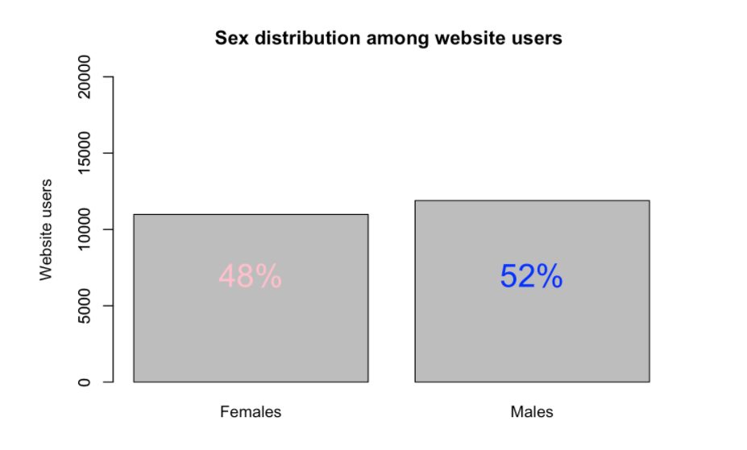
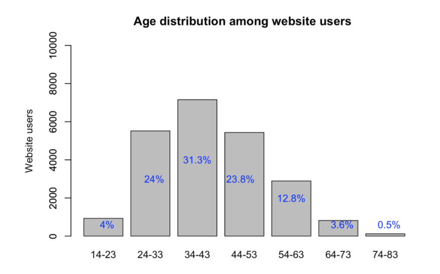
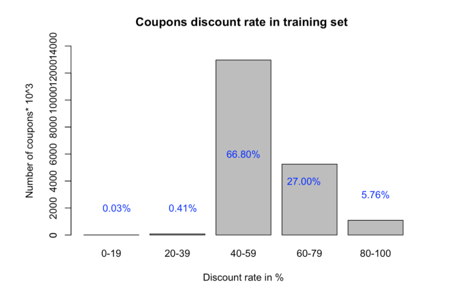
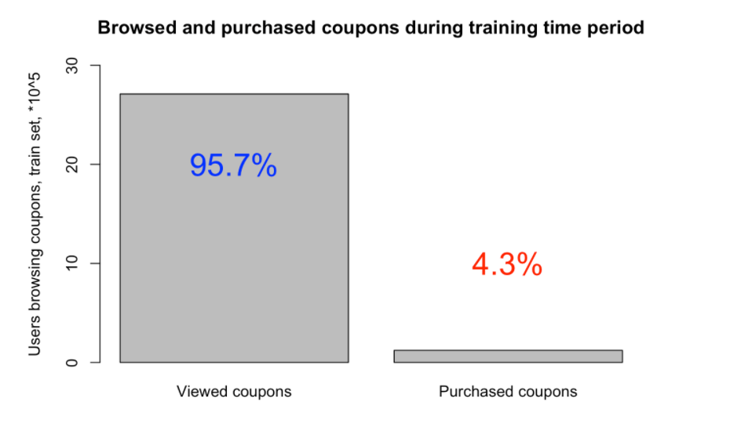

Home
Approaches
Data Set
We have a year of data from 07/01/2011 to 06/30/2012 and the last week is used for evaluation purposes. Namely, we have the following data files:
- Users [22,873 unique users]: We have information about the state, sex, age, user ID hashtag, etc.
- Coupons [19,413 unique coupons]: We have some information about the category, store location, state, store rate, discount, validity period, coupon ID hashtag, etc.
- Visits [2,833,180 unique visits]: We have information about the visits of different users on the website like date of visit, user ID, coupon ID, etc.
- Purchases [168,996 unique purchases]: We have information about the various purchases made inlcuding the location, number of purchased items, data of purchase, etc.
Graphical Representation of Data
These are some of the most important graphs showing the data in a more presentable manner.

Number of Records vs Different Attributes

Coupon ID vs Total % of User IDs

Bubble Chart for Different Coupon Categories

Average Catalog Price vs Coupon Category

Number of Records vs Coupon Category based on Capsule Text

Number of Records vs Coupon Category based on Genre
Exploratory Data Analysis
Before making any predictions, we first wanted to understand our dataset better. Here are some graphs which provide a better understanding of the dataset.
   
Approaches Used
Once we had a clear understanding of our given dataset, we could start applying different machine learning algorithms to perform our coupon prediction task
Classifiers Used
-
Nearest Neighbor: This is a non parametric approach for classification and regression. In a classification task, an object is classified by its majority vote of its neighbors, and the object is assigned to the class most common among its nearest 'k' neighbors. Since K-NN is a type of instance based learning, or lazy learning, there is no training time. This was quite beneficial, because of the large size of the dataset, training times would range from hours to weeks depending on the performance of the computer used. The attributes used for a Nearest Neighbor approach include dates available, genre, price, discount, etc.
In our project, we used the following Nearest Neighbor approaches and got the following accuracies:
- 3-NN: 37.91%
- 5-NN: 34.08%
- 10-NN: 29.44%
- Decision Tree: A decision tree is a support tool that uses a tree-like graph or a model of decisions and their possible consequences. The attributes used for the Decision Tree approach include dates available, genre, price, discount, etc. However, decision trees only provided an accuracy of 29.48%.
- Naive Bayes: A Naive Bayes classifier is a classification technique which is based on Baye's Theorem with an assumption of independence amongst the classifiers. Using this approach, we got an accuracy of 31.07%.
Recommending Coupons
We could determine a few things about users by past coupon purchases, but some had very little history on the site. For users with no information from either their reported location or past purchases, we simply recommended coupons that we predicted to be popular. In cases where we had past purchases, we looked at their location by prefecture and small area as well as the genre of coupon they bought most frequently. We could then recommend the most popular coupons in those more specific subsections of the coupon area. However, for final coupon prediction, we tried Cosine Similarity methods.
Cosine Similarity methods: Similar to Problem Set 4, where we used Cosine Similarity to predict the Caption of an image, we used a Cosine Similarity approach to predict whether a user purchased a particular coupon or not. The input vector has a list of features which correspond to the Coupon attributes like Usable Date, Usable Period, Location, Genre etc. We used three main approaches:
- Using only Cosine Similarity,
- Taking Coupon Viewed Logs into Consideration, and
- Using Pearson Correlation between Sparse Matrices